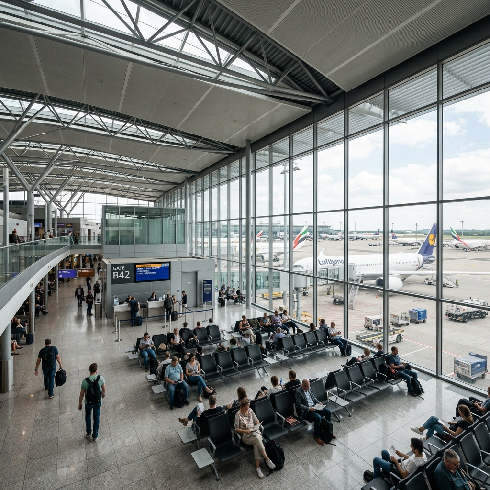

International Airport Hub
Soekarno-Hatta (CGK / WIII)
Pusat kendali informasi penerbangan digital real-time seluruh terminal. Terintegrasi satelit ADS-B dan AeroDataBox.
--:--:-- WIB
--:--:-- UTC
STATUS LANDASAN
07L/25R & 07R/25L Active
KETEPATAN WAKTU
95% On-Time
TOTAL PENERBANGAN
0
(0 aktif)
ESC
METAR Weather
Live Open-Meteo
--°C
Cerah
Angin: 12 km/h
Vis: > 10 km
Terminal 1
T1
Domestik Utama
Terminal 1
Lion Air, Batik Air, Super Air Jet, Wings Air, Sriwijaya Air, NAM Air.
- Keberangkatan
|
- Kedatangan
Buka FIDS Board →

Terminal 2
T2
LCC & Regional
Terminal 2
AirAsia, Pelita Air, Scoot, Jetstar, Cebu Pacific, dan maskapai regional.
- Keberangkatan
|
- Kedatangan
Buka FIDS Board →
Terminal 3
T3
Internasional & Flagship
Terminal 3
Garuda Indonesia, Citilink, Singapore Airlines, Emirates, Qatar Airways, ANA.
- Keberangkatan
|
- Kedatangan
Buka FIDS Board →